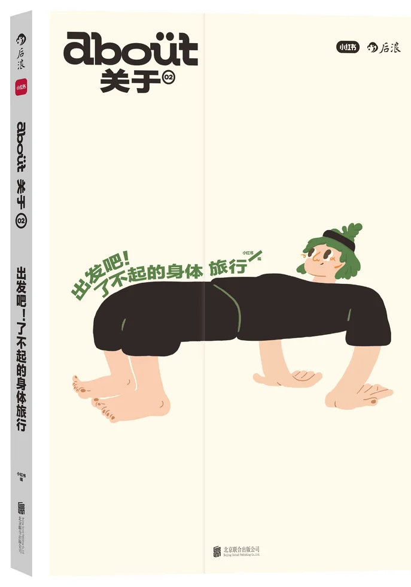
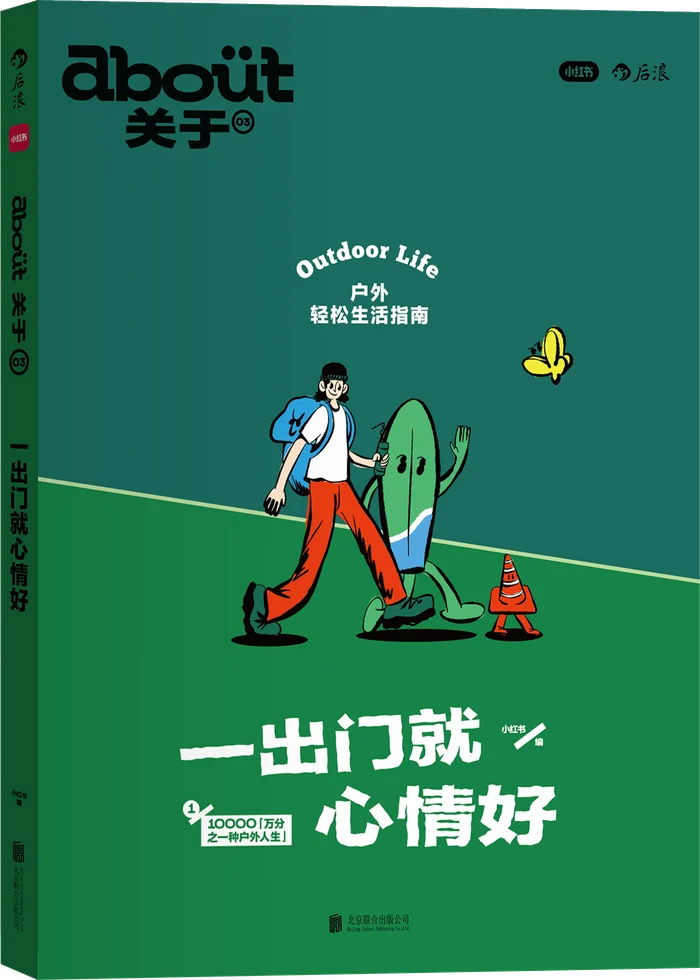
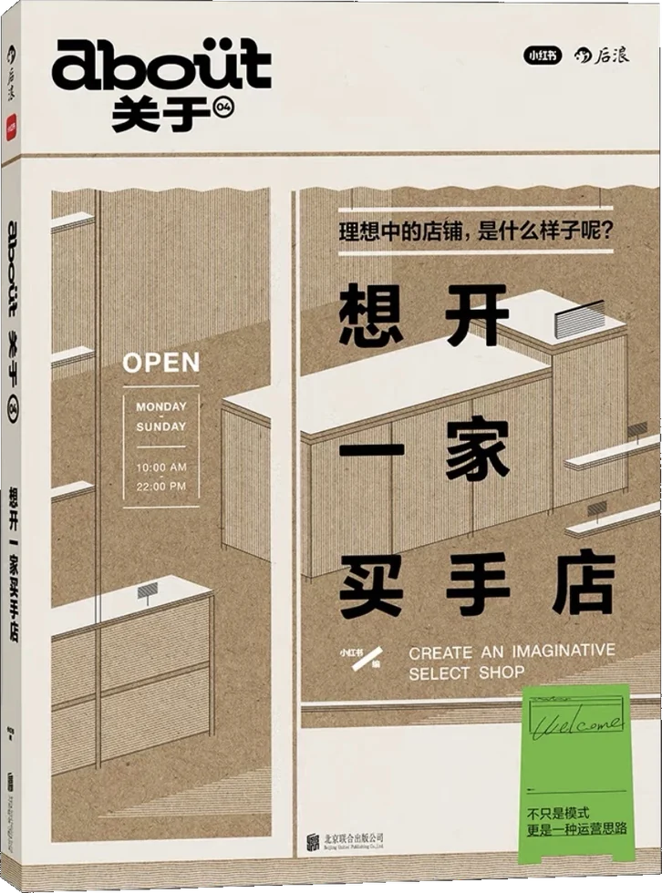
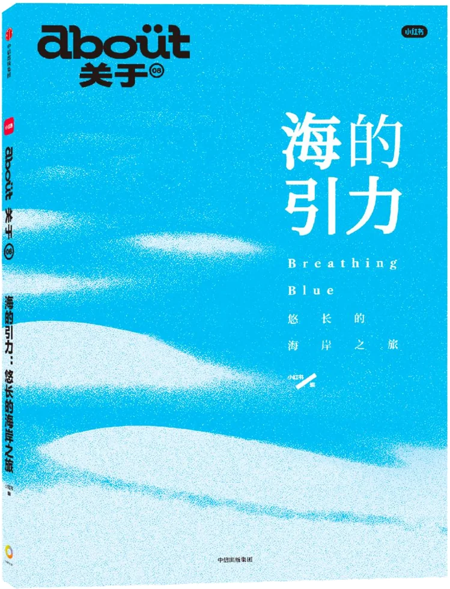
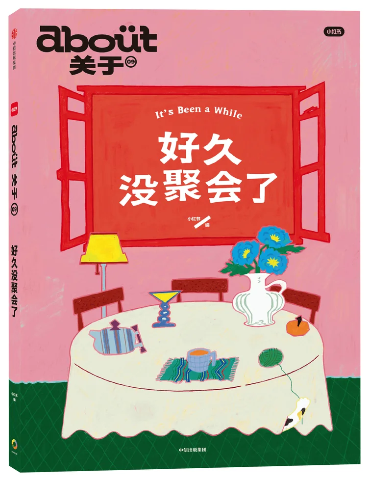

Current Calls
我们等待你的加入。
这是编辑部正在推进的出版物、播客、线下项目，每个岗位都是一个具体的创作入口。
我们是 about编辑部。
"about关于"是小红书于2021年创立的内容品牌，延续 "Inspire Lives"理念，关注人们生活的方式，重新思考生活的本质。
编辑部通过纸质出版物、播客、线下活动、联合创意项目等形式展开创作，基于不同项目需求，我们正在寻找各领域的创作者，包括撰稿人、摄影师、策划人及更多内容伙伴。期待与你共同完成下一次创作。








这是编辑部正在推进的出版物、播客、线下项目，每个岗位都是一个具体的创作入口。